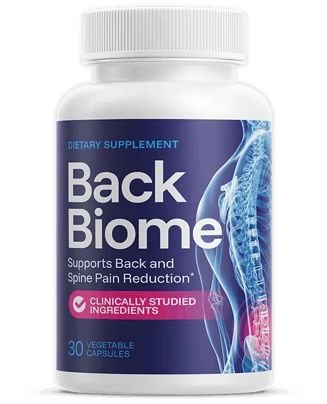

Vegetable capsules · 30 per bottle · Adults 18+ · One a day
BackBiome: A Daily Capsule Marketed To Support Back Comfort, Flexibility And An Easier Day
BackBiome is a once-daily capsule for adults who feel their back after long drives, long desk days or the first minutes out of bed. You take one capsule with a meal, with no powder to mix. The seller presents it as support for back comfort and flexibility, and the bottle says "Supports Back and Spine Pain Reduction" and "Clinically Studied Ingredients". We read that more carefully: it does not treat or reverse back pain, no amount is listed for any ingredient, no study of the capsule is shown, and most sudden back pain eases on its own with movement. Back pain with bladder or bowel changes, numbness between the legs or worsening leg weakness needs urgent care. This page explains what you get, which claims we leave out, the medicine cautions, the three bundle prices and how the 60-day refund works, including sending bottles back.*
- One capsule a day, with a meal
- Seven described ingredients to read one by one
- Free shipping on 3 and 6 bottles
- A 60-day money-back guarantee, bottles returned
- 1Knowthe back pain red flags
- 2Seea clinician if pain persists
- 3Askyour pharmacist about medicines
- 4Takeone capsule with a meal
| Bladder or bowel changes, groin numbness? | Urgent care |
| On blood thinners or antibiotics? | Ask first |
| Pain that lasts weeks? | See a clinician |
Secured payment • Encrypted checkout • 60-day guarantee
Related: Pain claims we skip · FAQ · The blog
*These statements have not been evaluated by the Food and Drug Administration. This product is not intended to diagnose, treat, cure or prevent any disease.

An animated teaching sketch, not data. Illustration.
At A Glance
What The BackBiome Seller Says About Quality
These are the seller's statements, reported as stated.

Made In The USA
Per the seller.

GMP Practice
Good Manufacturing Practice, per the brand.

Plant-Based Formula
The seller's wording, not a certification.
- FDA registered site
Facility Note
Not an FDA approval of the product.
The seller's page labels one of these "FDA Approved". The FDA does not approve dietary supplements, so no such seal appears here. See the quick answers and the pain claims we skip.
Know the red flags first, then the checkout.
60-day guarantee · Buying checklist · Bundle prices
What Is It
What Is BackBiome, As Shown On The Bottle And Page?
BackBiome comes in a white bottle with a navy and magenta label showing a spine, 30 vegetable capsules to a bottle.*
The seller describes seven ingredients and lists no amounts. One is an unnamed antioxidant blend and the probiotic strains are not named, so the label's Supplement Facts panel on your own bottle is the final word.
It is a dietary supplement for adults: not a drug, not FDA approved and not a treatment for back pain, a slipped disc or sciatica.
Related: The seven ingredients · What an unnamed blend hides · Pain claims we skip
Read The IngredientsSeller artwork, as supplied.
Pricing
BackBiome Prices: From $49 A Bottle
Three bundles, with free shipping on the larger two.
Starter
- 60 days at 1 capsule a day
- + $9.99 shipping
- 60-day guarantee, bottles returned
Popular
- 90 days at 1 capsule a day
- Free shipping
- 1 bonus book
- 60-day guarantee, bottles returned
Best Value
- 180 days at 1 capsule a day
- Free shipping
- 2 bonus books and VIP area
- 60-day guarantee, bottles returned
Against $69 bottles, three bottles save $10 each and six save $20 each. The seller's graphics also strike through $307.99, $447 and $894, badge "SAVE $270" and "SAVE $600", and the page says "Regular price $153", none of which anyone is shown paying, so we leave them out and do not use those graphics. Confirm the final total and terms at checkout. Bundle prices · Buying checklist · Shipping info
Sixty Days
BackBiome's 60-Day Money-Back Guarantee, And Returning Bottles
The seller advertises a 100% money-back guarantee for 60 days from the purchase date. You contact its support and send the bottles back, full or empty, for a refund of the order.
Keep the bottles and packaging, ask support where to send them, and set a reminder around day 45. See the refund policy and the sixty-day refund steps.
Check A Bundle With A Guarantee The steps in detail →Extras
BackBiome Bonus Titles: Two Offered, Reviewed
Digital reading with 3 and 6 bottle orders, per the seller.
The other title, "The Truth About Back Pain", has a supplied cover reading "The Honey Paste Secret for Stopping Back Pain", which promises to stop pain and mentions a product the seller says it does not sell, so no cover is shown. The seller's $59.95 and $49.95 values are not repeated. See the bonus titles reviewed and bundle prices.
Related: Shipping info · Refund policy · Pregnancy and teens
How It Works
How BackBiome Is Meant To Be Used: One Capsule With A Meal
The seller says to take one vegetarian capsule once daily with a full meal, or as directed by a healthcare professional, and to stay well hydrated.*
- Know the red flags for urgent back pain.
- See a clinician if pain lasts weeks.
- Ask your pharmacist about your medicines.
- Take one capsule with a meal, and keep moving.
- Decide inside the 60-day window.
Related: The daily capsule routine · See a doctor first · Back pain and movement
One capsule inside a back-friendly day. Illustration.
The seller's four-layer story says the capsule calms inflammation, feeds tissue, soothes nerves and rebalances the gut. No trial shows that, so we do not repeat it. Why →
Ingredients
Inside BackBiome: Seven Ingredients, No Amounts
What each is and what to watch for. The ingredients in detail →
The List At A Glance
Seven descriptions, no numbers.
| BackBiome, as the seller lists it | Detail |
|---|---|
| Form | Vegetable capsule, 30 per bottle (seller and bottle) |
| Suggested use | One capsule daily with a full meal, or as directed by a healthcare professional (seller) |
| Probiotic complex | Strains and amount not given |
| Turmeric root extract | Amount not given |
| Boswellia serrata | Amount not given |
| Ginger root extract | Amount not given |
| Bromelain | Amount not given |
| Magnesium (as glycinate) | Amount not given |
| Antioxidant support blend | Items and amount not named |
| Supplement Facts panel | Not supplied or shown on the seller's page |
How to read it: seven ingredients are described, none has an amount, one is an unnamed blend and the probiotic strains are not named. The bottle claims "clinically studied ingredients", but no study of the finished product is shown. The Supplement Facts panel on your own bottle is the final word.
Storage and cautions: read the directions and warnings on your own bottle.
General evidence. Illustration.
A fair summary: exercise and staying active have the best evidence for back pain, turmeric, ginger and boswellia have small joint-pain trials at higher doses, magnesium evidence is thin and a gut-spine route is speculative, and no trial of this capsule is shown.* See the blog on turmeric, boswellia, ginger and probiotics.
On blood thinners or antibiotics, or with a weak immune system? Ask first.
Honest information first · Blood thinners · Probiotics and immunity
Safety
BackBiome Safety: Red Flags, Bleeding, Kidneys, Immunity And Medicines
Six reasons to ask first.
Red Flags First
Back pain with bladder or bowel changes, groin numbness or worsening leg weakness needs emergency care. Several ingredients may also touch clotting and how medicines work. Keep each prescription as your clinician set it. See back pain red flags and magnesium, kidneys and medicines.
Illustration.
Illustration.
A Capsule Is Not A Diagnosis
Persistent back pain deserves an assessment. See see a doctor first.
| If you | Then |
|---|---|
| Have bladder or bowel changes, groin numbness or worsening leg weakness | Seek emergency care. See back pain red flags. |
| Take warfarin, apixaban, aspirin or other thinners | Ask first. See blood thinners and bleeding. |
| Have kidney disease, take antibiotics or have gallstones | Ask first. See magnesium, kidneys, medicines. |
| Have a weak immune system | Ask first. See probiotics and weak immunity. |
| Are pregnant, nursing, under 18 or have a condition | Do not start without a doctor. See pregnancy, teens, conditions. |
| Have pain that lasts weeks, or runs down a leg | See a clinician. See see a doctor first. |
See A Doctor Soon For
Fever with back pain, pain after a fall, unexplained weight loss, constant night pain, or any new back pain in older age.
Keep It Away From Children
Store the bottle in a cool, dry place and out of reach.
Illustration.
Benefits
What BackBiome Aims To Support, And Where It Stops
Goals, never promises. The support goals →
A trial window
A 60-day money-back guarantee.
Illustrative emphasis, not measured.
Movement Carries The Weight
Staying active, gentle exercise and good sleep do far more for most backs than any capsule. See what BackBiome aims to support and how to judge back pain claims.
Choose Your Bundle
Comparing BackBiome Bundles By Cost Per Day
The lowest per-bottle price, $49, is on the six bottle bundle.
Starter
- 60 days at 1 capsule a day
- + $9.99 shipping
- 60-day guarantee, bottles returned
Popular
- 90 days at 1 capsule a day
- Free shipping
- 1 bonus book
- 60-day guarantee, bottles returned
Best Value
- 180 days at 1 capsule a day
- Free shipping
- 2 bonus books and VIP area
- 60-day guarantee, bottles returned
Cost per day. Illustration.
The Sums
Two bottles are $138 plus $9.99 shipping ($147.99), three are $177 and six are $294, with free shipping on the last two. At one capsule a day that is about $2.47, $1.97 and $1.63 a day. See bundle prices.
Start Small If Unsure
If you are unsure how the ingredients sit with your medicines, the 2 bottle bundle is the careful start. See the buying checklist and the refund steps.
Sixty days. Illustration.
Customer Reviews
BackBiome Customer Reviews: Questions And Honest Answers
Individual buyers cannot be verified, so no star ratings, counts or named testimonials appear here, and the portraits supplied are illustrative images only. The seller's page prints three "verified purchase" stories, one saying back pain is "completely gone", which is a cure claim, and we do not repeat them. Verified reviews will be added when they can be shown in full, critical ones included.
Illustrative image, not a customer.
Will it make my back pain go away?
No supplement is shown to end back pain. Most sudden episodes ease on their own within weeks, which can make any capsule seem to work. We do not repeat the seller's "completely gone" story.
Illustrative image, not a customer.
Is it safe with my medicines?
Ask first if you take blood thinners, antibiotics or have kidney disease, gallbladder problems or a weak immune system. No ingredient amount is listed, so a doctor cannot easily judge it.
Illustrative image, not a customer.
When is back pain an emergency?
With loss of bladder or bowel control, numbness between the legs, worsening leg weakness, fever, a recent injury or unexplained weight loss. A supplement is not the answer to those.
Send yours
Used BackBiome? Email contact@backbiome.com with your order number and an honest account, kind or critical. Verified reviews can appear here.
Common questions
Pain claims, amounts, medicines and refunds. See the quick answers.
Solid facts
The ingredients, the prices and the refund steps are spelled out here and in the blog.
Questions
BackBiome Questions, Answered Carefully
What is BackBiome?
A once-daily vegetable capsule with a probiotic complex and six other ingredients, marketed to support back comfort and flexibility.
What is inside?
A probiotic complex, turmeric root extract, boswellia serrata, ginger root extract, bromelain, magnesium glycinate and an unnamed antioxidant blend, per the seller.
Are the amounts listed?
No. No amount is given for any ingredient, the probiotic strains are not named and one blend is unnamed.
How do I take it?
One capsule daily with a full meal, or as directed by a healthcare professional.
Does it treat back pain?
No. It does not treat, cure or reverse back pain, a slipped disc or sciatica.
Is it the same as BackBiome honey paste?
The seller says no, and that it sells only capsules. A supplied bonus cover nevertheless mentions a honey paste, so we left that cover out.
Is it FDA approved?
No. Supplements are not. The seller only says it is made in an FDA-registered facility.
Who should ask a doctor first?
Anyone on blood thinners or antibiotics, with kidney disease, a weak immune system or gallbladder problems, pregnant, nursing, or under 18.
What does it cost?
$69, $59 or $49 a bottle for 2, 3 or 6 bottles: $147.99 with shipping, $177 or $294.
Is it a subscription?
The seller says no: no subscription and no auto-rebill.
How does the guarantee work?
60 days from purchase: contact support, then send the bottles back, full or empty.
When is back pain an emergency?
With loss of bladder or bowel control, numbness between the legs, worsening leg weakness, fever, injury or unexplained weight loss.
From The Blog
The BackBiome Notebook: Ten Linked Entries
Why back pain happens, each ingredient and how to judge claims.
Why Low Back Pain Happens
Usually not serious.
EvidenceMost Back Pain Improves With Movement
Natural recovery.
IngredientsTurmeric And Curcumin For Pain
Small trials.
IngredientsBoswellia Serrata For Joint Pain
Higher doses.
IngredientsGinger Root For Pain
Modest effects.
SafetyBromelain Enzymes For Swelling
Bleeding caution.
IngredientsMagnesium Glycinate And Cramps
Thin for backs.
ClaimsProbiotics And The Gut-Spine Claim
A hypothesis.
LabelWhat An Unnamed Blend Hides
Ask for names.
ClaimsHow To Judge Back Pain Claims
Four questions.
Ready When You Are
Start With The Red Flags, Then Choose BackBiome
One capsule a day, seven described ingredients and a 60-day money-back guarantee, from $49 a bottle on the six bottle bundle. Order once you know the back pain red flags, have seen a clinician about persistent pain and have compared the ingredients with your own medicines. See the buying checklist and bundle prices.
- No amounts for any ingredient
- Know the urgent signs first
- Bottles go back for a refund
- No promise of results
The Details
The BackBiome Details, As The Seller Lists Them
Seven ingredients, no amounts. The ingredients →
| BackBiome, as the seller lists it | Detail |
|---|---|
| Form | Vegetable capsule, 30 per bottle (seller and bottle) |
| Suggested use | One capsule daily with a full meal, or as directed by a healthcare professional (seller) |
| Probiotic complex | Strains and amount not given |
| Turmeric root extract | Amount not given |
| Boswellia serrata | Amount not given |
| Ginger root extract | Amount not given |
| Bromelain | Amount not given |
| Magnesium (as glycinate) | Amount not given |
| Antioxidant support blend | Items and amount not named |
| Supplement Facts panel | Not supplied or shown on the seller's page |
How to read it: seven ingredients are described, none has an amount, one is an unnamed blend and the probiotic strains are not named. The bottle claims "clinically studied ingredients", but no study of the finished product is shown. The Supplement Facts panel on your own bottle is the final word.
Storage and cautions: read the directions and warnings on your own bottle.
A dietary supplement cannot be FDA approved. Read the directions and warnings on your own bottle, and see the health disclaimer.
References
Independent Reading For BackBiome Shoppers
None of them tested BackBiome itself. Our blog digs into each part →
These organizations do not endorse, sponsor or have any affiliation with BackBiome or this website. See also the health disclaimer.